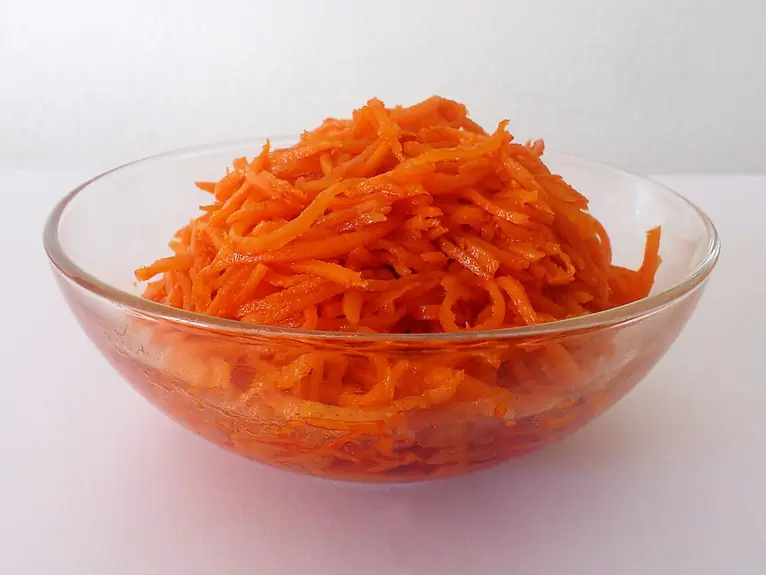

Фото: Off-shell, CC BY-SA 4.0

Морковь по-корейски
Острая маринованная морковь соломкой с чесноком и уксусом
20 мин6 порц.136 ккал на порциюБ 1 · Ж 10 · У 10Азиатская кухня
Продукты на 6 порц.
- Морковь5 шт
- Чеснок3 зуб.
- Уксус 9%2 ст. л.
- Сахар1 ст. л.
- Соль1 ч. л.
- Растительное масло4 ст. л.
- Острый перец молотый0,5 ч. л.
- Паприка1 ч. л.
- Перец чёрный молотый1 щеп.
Как готовить
- Морковь очистите и натрите на тёрке для корейской моркови длинной соломкой.
- Посыпьте солью и сахаром, помните руками и оставьте на 10 минут, чтобы пустила сок.
- Добавьте уксус, давленый чеснок, паприку, чили и перец, перемешайте.
- Разогрейте масло в сковородке почти до дымка и сразу полейте морковь, перемешайте.
- Накройте и уберите в холодильник минимум на 2 часа, лучше на ночь.
Совет. Уксус берите столовый 9 %. Хранится в банке в холодильнике до 5 дней, со временем становится вкуснее.